| Produto |
Páis |
Tipo |
História |
| 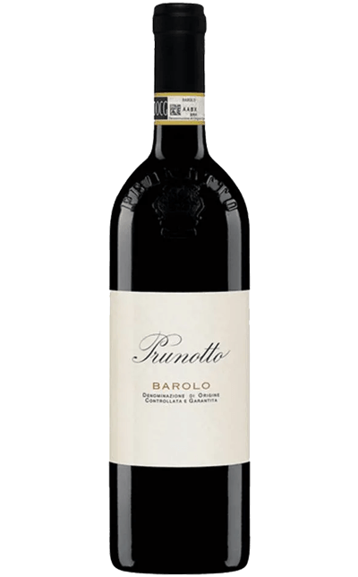 |
 |
Vinho tinto Italiano |
O vinho Barolo DOCG Prunotto remonta ao início do século XX, quando a família Prunotto começou a produzir vinhos na região de Piemonte, no norte da Itália. Alfredo Prunotto, o fundador da vinícola, era conhecido por ser um comerciante de vinhos experiente e visionário, que tinha um conhecimento profundo das melhores vinhas da região. |
| 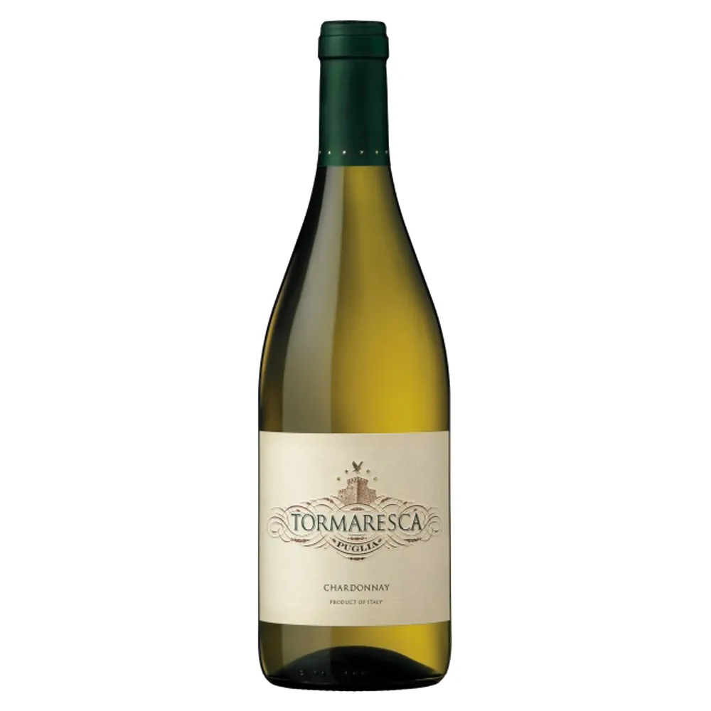 |
|
Vinho Branco Italiano |
A história do vinho branco Tormaresca começa em 1998, quando a família Antinori, uma das mais renomadas produtoras de vinho da Itália, adquiriu uma propriedade na região de Puglia, no sul da Itália. A propriedade, chamada de "Masseria Maime", possui mais de 1.000 hectares de terras, sendo cerca de 400 hectares destinados ao cultivo de uvas. |
| 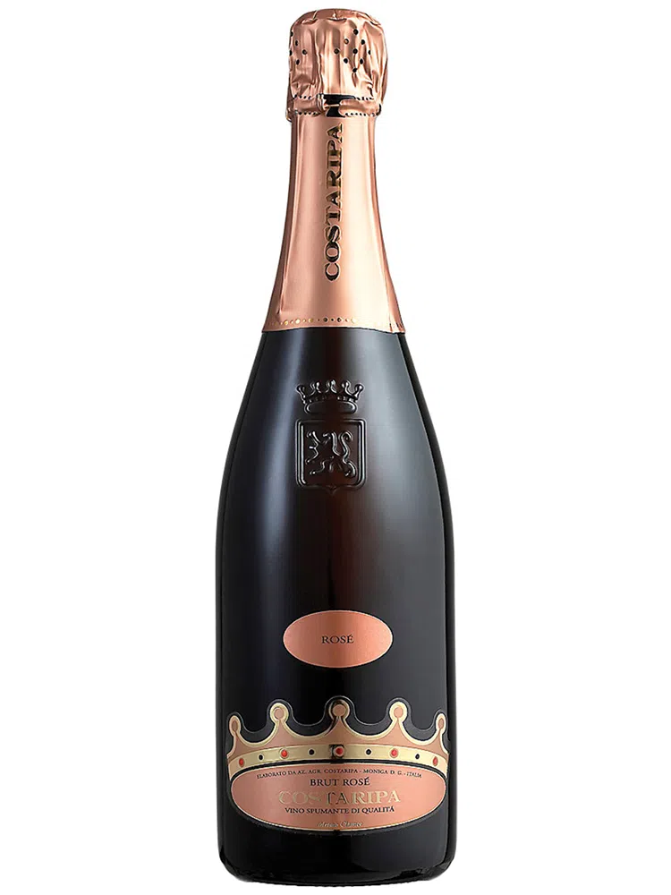 |
|
Espumante Italiano |
O espumante COSTARIPA BRUT ROSÉ é um espumante produzido na região de Lombardia, no norte da Itália. A vinícola COSTARIPA foi fundada em 1936, mas foi em 1998 que a família Camilla decidiu se dedicar exclusivamente à produção de vinhos espumantes. |
| 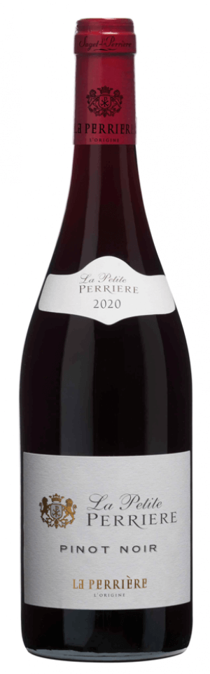 |
|
Vinho Tinto Francês |
La Petite Perrière Pinot Noir 2020 é um vinho tinto produzido pela vinícola francesa Saget La Perrière, localizada no Vale do Loire, uma das mais antigas e tradicionais regiões vinícolas da França. |
| 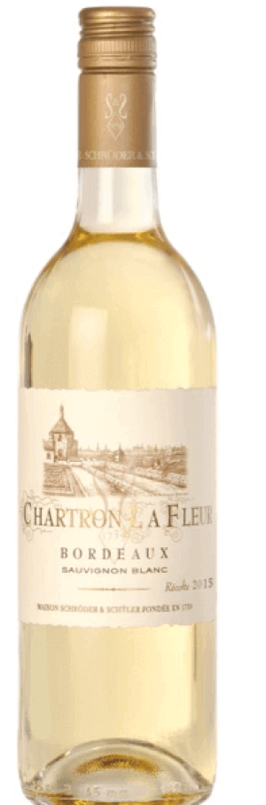 |
|
Vinho Branco Francês |
A vinícola Chartron et Trébuchet foi fundada em 1984 por Pierre Trébuchet e sua esposa, que decidiram unir suas paixões pelo vinho e pela história da região de Bordeaux. Desde então, a empresa tem produzido vinhos de alta qualidade, utilizando técnicas modernas de vinificação e respeitando as tradições da região. |
| 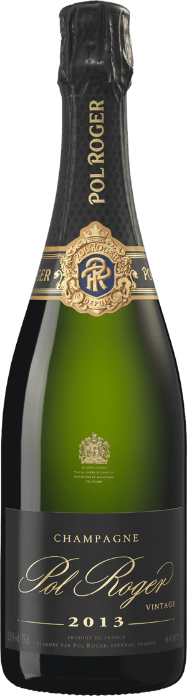 |
|
Espumante Francês |
O Champagne Pol Roger Brut Vintage 2013 é um vinho espumante produzido pela renomada casa de Champagne Pol Roger, fundada em 1849 em Épernay, na região de Champagne, na França. |
| 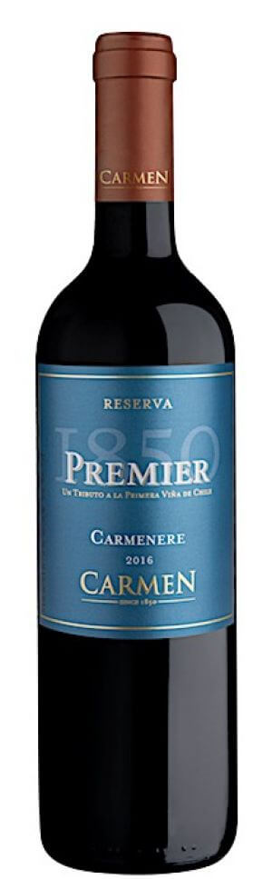 |
 |
Vinho Tinto Chileno |
Carmen Premier 1850 Reserva Carménère 2016 é um vinho tinto produzido pela vinícola chilena Viña Carmen, localizada no Vale do Maipo, uma das regiões vinícolas mais importantes do Chile. A Viña Carmen foi fundada em 1850, sendo uma das vinícolas mais antigas do Chile. |
| 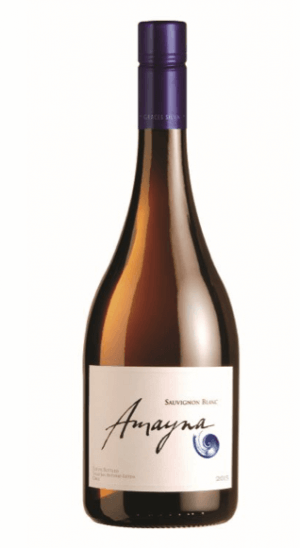 |
|
Vinho Branco Chileno |
Amayna Sauvignon Blanc 2020 é um vinho branco produzido pela vinícola chilena Amayna, localizada no Vale de Leyda, uma das regiões vinícolas mais importantes do Chile. A vinícola Amayna foi fundada em 2002 pela família Garcés Silva, que tem uma longa tradição na produção de vinhos de alta qualidade no Chile. |
| 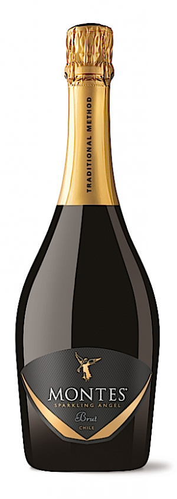 |
|
Espumante Chileno |
Montes Sparkling Angel Extra Brut é um vinho espumante produzido pela vinícola chilena Viña Montes, localizada no Vale de Colchagua, uma das regiões vinícolas mais importantes do Chile. A Viña Montes foi fundada em 1987 pelo enólogo Aurelio Montes e seus associados, com o objetivo de produzir vinhos de alta qualidade que reflitam a diversidade dos terroirs chilenos. |
| 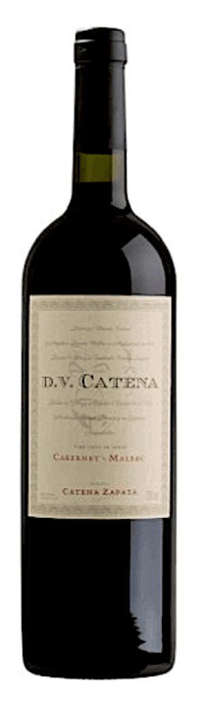 |
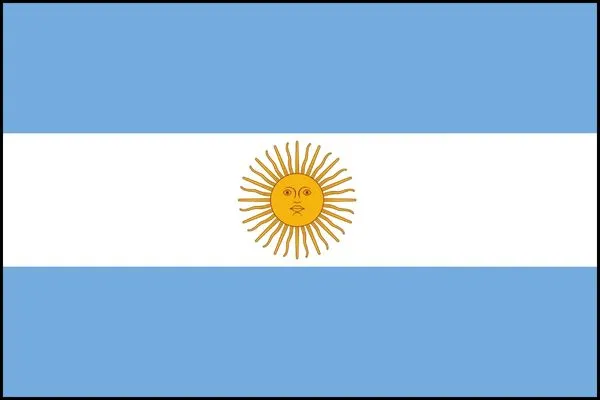 |
Vinho Tinto Argentino |
DV Catena Cabernet Malbec 2019 é um vinho tinto produzido pela vinícola argentina Bodega Catena Zapata, localizada na região vinícola de Mendoza, uma das mais importantes da Argentina. A Bodega Catena Zapata é uma das vinícolas mais prestigiadas da Argentina, fundada em 1902 por Nicola Catena, imigrante italiano. |
| 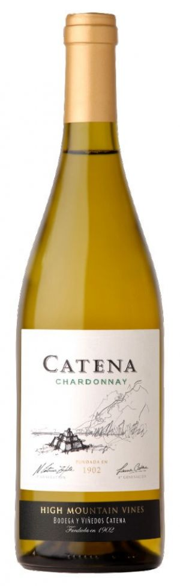 |
|
Vinho Branco Argentino |
A Bodega Catena Zapata é uma das mais prestigiadas vinícolas da Argentina, localizada na região vinícola de Mendoza. Fundada em 1902 por Nicola Catena, imigrante italiano, a empresa é reconhecida por sua dedicação à produção de vinhos de alta qualidade que reflitam o terroir único de Mendoza. |
| 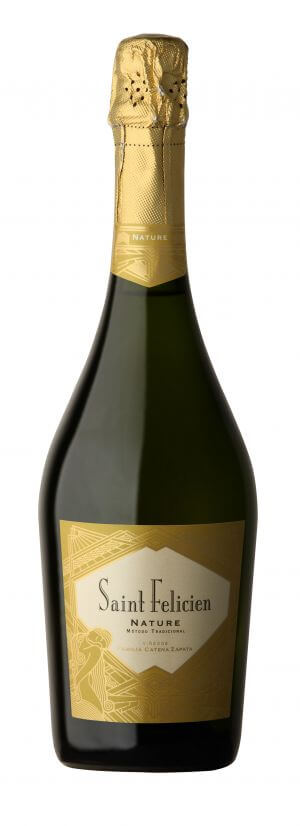 |
|
Espumante Argentino |
Aint Felicien Nature é um vinho tinto argentino produzido pela vinícola Bodegas Catena Zapata, localizada na região vinícola de Mendoza, na Argentina.Este vinho é elaborado com uvas das variedades Malbec e Cabernet Sauvignon, cultivadas em vinhedos de altitude, o que permite a produção de uvas de alta qualidade e de vinhos com características únicas. |
Home |